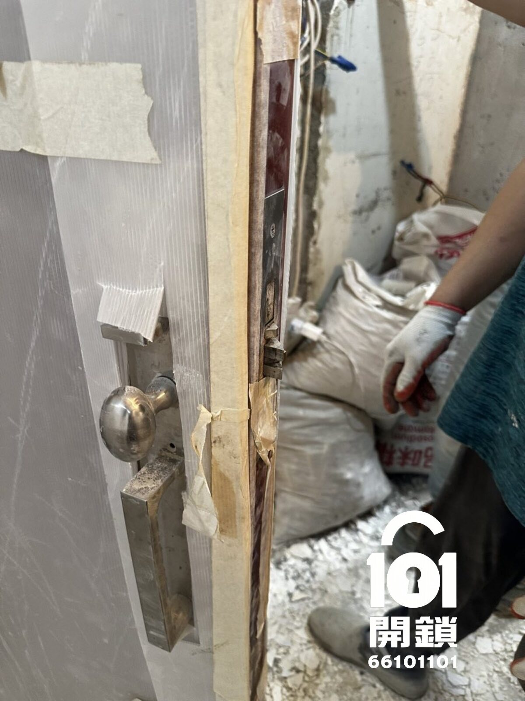
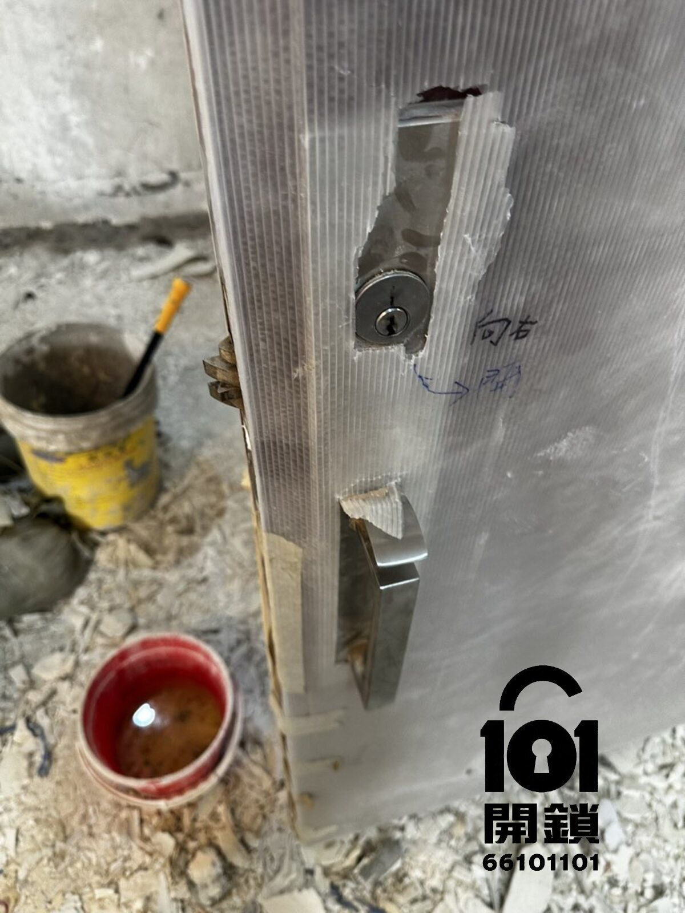

中西區・中環・裝修單位
中環開鎖案例｜裝修單位有鎖匙開唔到
裝修單位交收期間，客人手上有鎖匙但門鎖突然開唔到，擔心強行處理會破壞門鎖、門框或影響裝修進度。101開鎖師傅到場檢查後，以不破壞門鎖方式成功開鎖。
即撥 66 101 101WhatsApp 查詢
客人搵開鎖原因
個案發生喺中環一個裝修單位。客人到場準備跟進裝修工程，手上有正確鎖匙，但插入後門鎖仍然開唔到。由於單位正在裝修，現場需要工人出入和交收物料，客人希望盡快開門，同時不想破壞門鎖或門框。
客人主要顧慮
客人最擔心係如果暴力撬門，會令新裝修門身、門框或原有門鎖受損，之後要額外維修，亦可能拖慢裝修進度。因此查詢時特別要求師傅先檢查情況，盡量用不破壞門鎖的方法開鎖。
到場檢查與處理方法
師傅到場後先檢查鎖匙、鎖膽和門邊鎖舌位置，確認並非用錯鎖匙，而是門鎖在裝修期間可能因灰塵、門框位置或鎖舌受壓而未能正常開啟。師傅使用專業工具逐步釋放鎖舌，成功在不破壞門鎖的情況下開門。
完成後室內及室外照片
以下為開鎖完成後記錄，展示室內及室外門鎖狀態。門鎖沒有被鑽開或撬壞，裝修單位可以繼續正常出入。

完成後室內照片

完成後室外照片
完成後測試
開門後，師傅即場用客人原本鎖匙反覆測試開門、關門、上鎖和解鎖，確認門鎖仍可正常使用。門身和門框沒有被撬花，門鎖亦沒有被鑽開或破壞，客人可以繼續安排裝修工程。
101開鎖保養建議
裝修單位容易有木屑、灰塵或油漆粉末進入鎖膽，亦可能因門框未完全校正而令鎖舌受壓。裝修期間如發現有鎖匙但開唔到，不建議強行扭匙或撬門，應先拍下門鎖和門邊位置，聯絡鎖匠評估。
中環裝修單位有鎖匙開唔到？
可致電 +852 6610 1101，或WhatsApp發送門鎖相片、地區和情況。101開鎖會先評估鎖種、處理方式和收費，再安排師傅上門。
24小時電話WhatsApp 發相報價